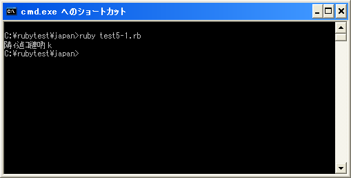
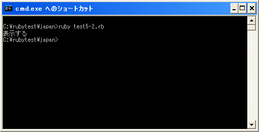
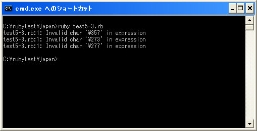

Windows環境でUTF-8をベースに使用する
Windows環境であっても文字コードはUTF-8ベースが主流となってきていることもあり、今後のRubyサンプルも文字コードにUTF-8を使っていきます。そこでWindows環境でUTF-8を使ってプログラミングを行うまとめをしておきます。
まずUTF-8を使用しますのでプログラムの先頭行に「#! ruby -Ku」を指定しておきます。
#! ruby -Ku
print("表示する")
そしてプログラムを保存する時は文字コードをUTF-8に指定して保存します。
通常はこれでいいのですが、Windowsで標準出力としてコマンドプロンプトを使用している場合、コマンドプロンプトの文字コードがShift_JISのためそのまま「print」メソッドなどで出力すると文字化けします。

よって標準出力へ出力する場合は、UTF-8からShift_JISへ文字コード変換してから出力する必要があります。文字コード変換する方法はいくつかあるのですが今回は「Kconv」モジュールを使用します。
「Kconv」モジュールの詳しい解説は別のページで行います。ここでは使い方だけ見てください。まず「require」メソッドで「kconv」ライブラリを読み込みます。そしてモジュール関数として用意されている「Kconv.tosjis(str)」を使って文字コードをShift_JISに変換します。実際にプログラムする場合は次のようになります。
#! ruby -Ku
require "kconv"
print(Kconv.tosjis("表示する"))
実行結果は次の通りです。

今度は無事表示されました。
BOMの扱い
文字コードをUTF-8で保存する場合、BOM(バイトオーダーマーク)付きにすると問題が発生します。UTF-8で保存する場合はBOM無しにして下さい。
下記は先ほど無事に動いたプログラムですが、保存する時にUTF-8のBOM付きで保存してみます。
#! ruby -Ku
require "kconv"
print(Kconv.tosjis("表示する"))
実行結果は次の通りです。

このようにエラーが発生します。
test5-3.rb:1: Invalid char `¥357' in expression test5-3.rb:1: Invalid char `¥273' in expression test5-3.rb:1: Invalid char `¥277' in expression
エラーを見て頂くと分かる通り1行目でエラーが発生していることになっています。UTF-8でBOMを付けた場合にはプログラムの先頭に3つのバイト「EF BB BF」が付きます。「EF BB BF」をそれぞれ8進数にした値が「357 273 277」です。Rubyはこの3つの文字を不正な値としてエラーにしているわけです。
UTF-8で保存する場合にはBOM無しで保存して下さい。
( Written by Tatsuo Ikura )

著者 / TATSUO IKURA
初心者～中級者の方を対象としたプログラミング方法や開発環境の構築の解説を行うサイトの運営を行っています。